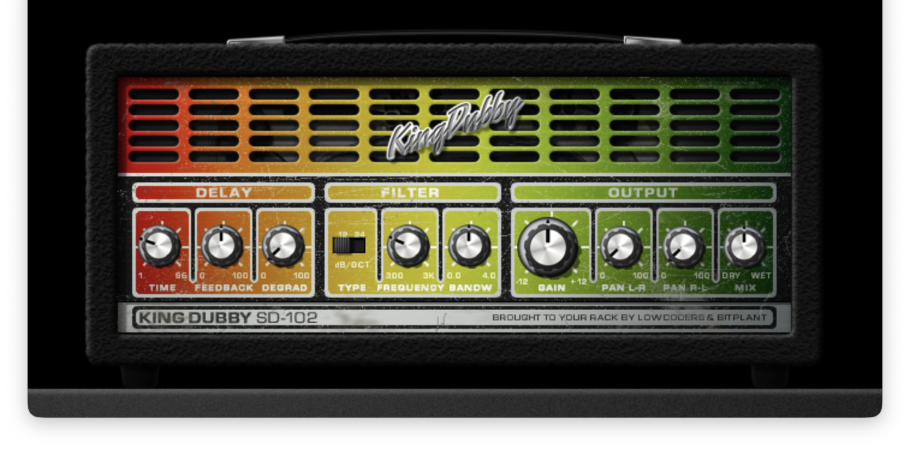

A rebuild of the classic Lowcoders dub delay for modern macOS.
KingDubby was a free dub delay plugin by Franck Stauffer (Lowcoders), with an interface by Thomas and Wolfgang Merkle (Bitplant), released between 2004 and 2008. It stopped loading when macOS dropped 32-bit plugins. I rebuilt it as a universal AU and VST3, keeping the original interface.

How it was rebuilt:
My first version ran away into piercing tones at moderate feedback, because I had used a resonant bandpass filter whose gain rises as the band narrows. Franck found his original source and sent it to me, and it showed a constant 0 dB peak bandpass, which holds unity gain at the center frequency at any bandwidth, so the feedback loop can't run away. I rebuilt the delay around his signal flow: Degradation blends the repeats between clean and filtered, the two pans act on the wet output, and feedback at 100 holds just under self-oscillation.
Features:
Bandpass filter inside the feedback loop, once or twice
Degradation between clean and filtered repeats
Separate pans for the left and right repeats
Delay time synced to the host tempo
AU and VST3, macOS (Universal)
Credits:
Original plugin: Franck Stauffer / Lowcoders (code), Thomas and Wolfgang Merkle / Bitplant (interface). The original interface assets belong to Lowcoders and Bitplant.